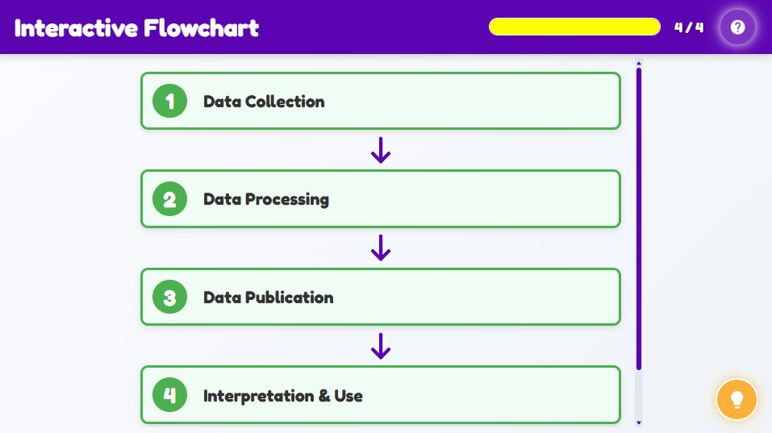

Welcome to Data Dive, where we trace the journey of population data from your neighbourhood all the way to the people in charge! In this activity, you will click through the steps of a real data flow, from the moment it is collected during a census or birth registration, to when it is cleaned and organized, and finally to when it is shared in reports and dashboards. Each step is like a link in a chain and every link is important.

| Concept | Detail |
|---|---|
| Importance | Population data is essential for understanding a country's people. |
| Main Sources | Censuses, Government Agencies (KNBS, Destatis), Vital Statistics, Sample Surveys (DHS), Administrative Records, International Publications. |
| Accuracy | Combining multiple sources often gives the most accurate picture. |